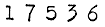

IEEE International Conference on Cluster Computing
Cluster2001 was a great success with over 300
attendees!
Presentations are available on the Program
site.
See also Pictures from the Conference
We hope to see you next year at Cluster
2002!

Sutton Place Hotel, Newport Beach, California, USA
Oct. 8-11, 2001
Sponsored by the IEEE Computer
Society, through the
Task Force on Cluster Computing (TFCC)
Organized by
California Institute of Technology
NASA Jet Propulsion Laboratory
University of California at Irvine
University of Portsmouth, UK
 |
 |
 |
 |
Additional Promotional Services Provided by

General Chairs:
Mark Baker (Portsmouth University, UK)
Larry Bergman (NASA JPL)
Technical Program Chair:
Thomas Sterling (Caltech & NASA JPL, USA)
Deputy Program Chair:
Daniel S. Katz (NASA JPL, USA)
